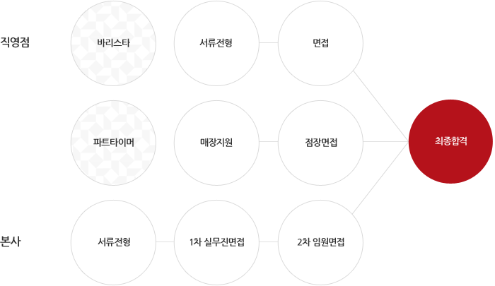

채용안내
채용절차
직영점
본사
인재상
고객지향
Customer oriented
할리스의 모든 결정은 고객으로부터 시작됨을 알고 고객에게 최고의 경험과 행복한 기억을 제공할 수 있도록 배려하고 노력하는 사람

정직성, 도덕성
Moral
다양한 변화를 수용하면서도 항상 바른길을 지향하며 기본과 원칙에 충실한 사람
창의와 도전
Creative & Challenging
앞선 감각으로 개인과 조직의 창의적이고 긍정적인 변화를 주도하며, 변화를 위한 도전을 두려워 하지 않는 사람
복리후생
급여 및 복리후생 제도 할리스는 합리적인 급여시스템과 복리후생제도를 운영하고 있습니다.
복리후생 및 교육 제도 직원에게 할리스는 일터이자 배움터, 삶터가 될수 있도록 복리후생제도와 교육제도를 운영하고 있습니다.
급여체제 연봉제를 기본으로 하고 있으며, 직영점은 연봉과 별도로 점별 실적 및 평가에 따른 분기 인센티브제를 운영하고 있습니다. 직영점 : 기본연봉 + 점별 분기 인센티브 + 년간 PS 본사 : 기본연봉 + 년간 PS 복리후생 제도 선택적 복리후생 제도 운영 년 단위 복지포인트를 제공, 교육, 자기계발등 다양한 분야에서 사용가능 경조사 지원 : 각종 경조사 발생시 별도의 휴가제도 및 경조금 지급 장기근속자 휴가 및 포상 : 5년, 10년, 15년, 20년, 25년, 30년 임직원 할인제도 등 교육제도 Hollysta 신입사원 입문교육으로 커피에 관한 이론과 실습교육으로 진행됩니다. 365 학점제 년간단위 학점이수의 형태로 교육이 운영되고 있습니다. 직급별, 테마별, 역량별, 직무별 교육 등 분야의 전문가로 성장할 수 있는 다양한 교육이 진행 중입니다.